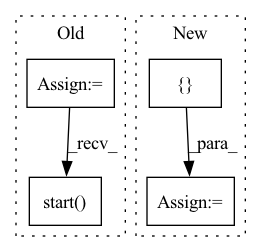

Pattern ID :13239

Before Change
dataset = "training-test-data"
tests_data_path = "tests/data/"
repository = TrainingDataRepository(tests_data_path, dataset)
model_trainer = ModelTrainer(GraphEncoder, loss_function, optimizer)
training = GridSearch(repository, model_trainer, epochs=10)
features = BASE_GRAPH_NODE_FEATURES
labels = BASE_GRAPH
features_filenames = [str(i) + "_training_features" + ".pickle" for i in range(dataset_size)]
labels_filenames = [str(i) + "_training_labels" ".pickle" for i in range(dataset_size)]
for i in range(dataset_size):
repository.save(features_filenames[i], features)
repository.save(labels_filenames[i], labels)
// When
training_loss, validation_loss, test_loss = training.start(batch_size, validation_split, test_split)
// Then
self.assertTrue(training_loss > 0.0)
self.assertTrue(validation_loss > 0.0)
After Change
def test_start_for_multiple_batches_of_differing_size(self):
// Given
dataset_size = 5
grid_search_dictionary = {
"epochs": [10],
"batch_size": [3],
"validation_split": [0.2],
"test_split": [0.1],
"loss_function": [nn.MSELoss()],
"optimizer": [to.optim.SGD],
"time_steps": [1],
"validation_period": [5]
}
dataset = "training-test-data"
tests_data_path = "tests/data/"
repository = TrainingDataRepository(tests_data_path, dataset)
model_trainer = ModelTrainer(GraphEncoder)
grid_search = GridSearch(repository, model_trainer, grid_search_dictionary)
features = BASE_GRAPH_NODE_FEATURES
labels = BASE_GRAPH
features_filenames = [str(i) + "_training_features" + ".pickle" for i in range(dataset_size)]
labels_filenames = [str(i) + "_training_labels" ".pickle" for i in range(dataset_size)]
for i in range(dataset_size):
repository.save(features_filenames[i], features)
repository.save(labels_filenames[i], labels)
// When
losses = grid_search.start()
// Then
configuration_id = list(losses["training_loss"].keys())[0]
In pattern: SUPERPATTERN
Frequency: 3
Non-data size: 4
Instances
Fragment ID: 44643497
Project Name: kovanostra/message-passing-neural-network
Commit Name: 78302a5dddf0e7625a290619654dccf4ef75cce1
Time: 2020-04-27
Author: kovanostra@gmail.com
File Name: tests/usecase/test_grid_search.py
M Class Name: TestTraining
N Class Name: TestTraining
M Method Name: test_start_for_multiple_batches_of_differing_size(1)
N Method Name: test_start_for_multiple_batches_of_differing_size(1)
M Parent Class: TestCase
N Parent Class: TestCase
M File Name: tests/usecase/test_grid_search.py
N File Name: tests/usecase/test_grid_search.py
M Start Line: 50
M End Line: 76
N Start Line: 57
N End Line: 88
'>
Before Change
tests_data_path = "tests/data/"
repository = TrainingDataRepository(tests_data_path, dataset)
model_trainer = ModelTrainer(GraphEncoder, loss_function, optimizer)
training = GridSearch(repository, model_trainer, epochs=10)
features = BASE_GRAPH_NODE_FEATURES
labels = BASE_GRAPH
features_filenames = [str(i) + "_training_features" + ".pickle" for i in range(dataset_size)]
labels_filenames = [str(i) + "_training_labels" ".pickle" for i in range(dataset_size)]
for i in range(dataset_size):
repository.save(features_filenames[i], features)
repository.save(labels_filenames[i], labels)
// When
training_loss, validation_loss, test_loss = training.start(batch_size, validation_split, test_split)
// Then
self.assertTrue(training_loss > 0.0)
self.assertTrue(validation_loss > 0.0)
After Change
def test_start_for_multiple_batches_of_the_same_size(self):
// Given
dataset_size = 6
grid_search_dictionary = {
"epochs": [10],
"batch_size": [3],
"validation_split": [0.2],
"test_split": [0.1],
"loss_function": [nn.MSELoss()],
"optimizer": [to.optim.SGD],
"time_steps": [1],
"validation_period": [5]
}
dataset = "training-test-data"
tests_data_path = "tests/data/"
repository = TrainingDataRepository(tests_data_path, dataset)
model_trainer = ModelTrainer(GraphEncoder)
grid_search = GridSearch(repository, model_trainer, grid_search_dictionary)
features = BASE_GRAPH_NODE_FEATURES
labels = BASE_GRAPH
features_filenames = [str(i) + "_training_features" + ".pickle" for i in range(dataset_size)]
labels_filenames = [str(i) + "_training_labels" ".pickle" for i in range(dataset_size)]
for i in range(dataset_size):
repository.save(features_filenames[i], features)
repository.save(labels_filenames[i], labels)
// When
losses = grid_search.start()
// Then
configuration_id = list(losses["training_loss"].keys())[0]
'>
Fragment ID: 44643627
Project Name: kovanostra/message-passing-neural-network
Commit Name: 78302a5dddf0e7625a290619654dccf4ef75cce1
Time: 2020-04-27
Author: kovanostra@gmail.com
File Name: tests/usecase/test_grid_search.py
M Class Name: TestTraining
N Class Name: TestTraining
M Method Name: test_start_for_multiple_batches_of_the_same_size(1)
N Method Name: test_start_for_multiple_batches_of_the_same_size(1)
M Parent Class: TestCase
N Parent Class: TestCase
M File Name: tests/usecase/test_grid_search.py
N File Name: tests/usecase/test_grid_search.py
M Start Line: 17
M End Line: 43
N Start Line: 18
N End Line: 49
'>
Before Change
stop: 6
step: 2
mock_config = MockConfig(args, yaml_content)
mock_config.start()
config = AnalyzerConfig()
cli = CLI(config)
cli.parse()
After Change
stop: 6
step: 2
expected_model_objects = [
ConfigModel("vgg_16_graphdef", parameters={
"concurrency": [1, 2, 3, 4]
}),
ConfigModel("vgg_19_graphdef",
parameters={"concurrency": [1, 2, 3, 4],
"batch_sizes": [2, 4, 6]})]
config = self._evaluate_config(args, yaml_content)
for model, expected_model in zip(
config.get_all_config()["model_names"],
'>
Fragment ID: 44643454
Project Name: triton-inference-server/model_analyzer
Commit Name: 1fa3e65df861b7008ceec0b002bc24ad1840a565
Time: 2021-02-09
Author: itabrizian@nvidia.com
File Name: tests/test_config.py
M Class Name: TestConfig
N Class Name: TestConfig
M Method Name: test_object(1)
N Method Name: test_object(1)
M Parent Class: trc.TestResultCollector
N Parent Class: trc.TestResultCollector
M File Name: tests/test_config.py
N File Name: tests/test_config.py
M Start Line: 176
M End Line: 247
N Start Line: 144
N End Line: 208